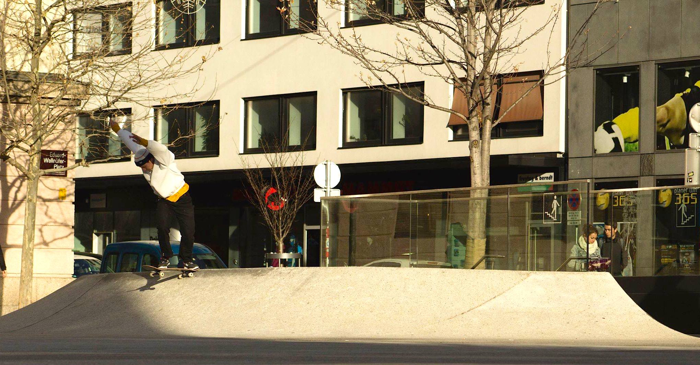
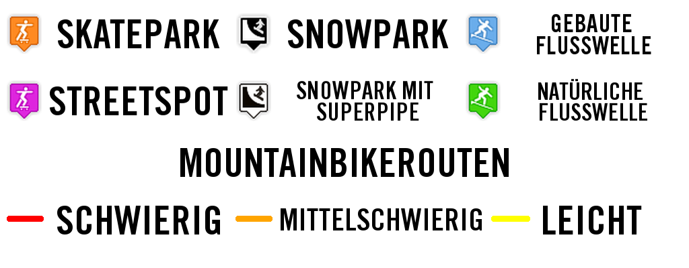

Skateboarden ist ein Action-Sport, bei welchem man auf einem Skateboard stehend bestimmte Tricks vollführt. Skateboarden wurde über all die Jahre von vielen verschiedenen Skatern geprägt und beeinflusst. Eine Studie aus dem Jahr 2009 ergab, dass der Skateboard-Markt mit 11.08 Millionen aktiven Skatern einen jährlichen Umsatz von geschätzten 4.8 Milliarden Dollar erzielt. Im Jahr 2016 wurde offiziell bekannt gegeben, dass Skateboarden bei den Olympischen Spielen 2020 in Tokyo als neue Disziplin aufgenommen wird.
